CANVAS
What can I help with?
My Workspace
/
Untitled Canvas
BCBCBryan CoccoOwner
Lena OrtizEditor
Jamal ReedEditor
3


Roblox Racing Sample Campaign

Assignment Summary
Acme.com sponsors a real NASCAR stock car. That car lives a double life: in the physical world it races on asphalt at full speed; inside Roblox's Driving Empire, it exists as a playable, drivable game asset enjoyed by millions of young players every day. We are activating the intersection of those two worlds.
The assignment is a paint scheme design contest. From June 19 through July 20, players are invited to design their own livery for the Acme.com NASCAR car. The winning design doesn't just win a prize — it gets applied to the actual, physical NASCAR race car.
This is not a banner ad or a sponsored stream. It is a genuine creative competition that turns passive players into active participants.
Success Metrics
Primary KPI — Total Contest Submissions
This is the number that anchors the case study and fuels the media pitch. Recommended baseline target: 5,000 submissions. Every dollar spent and every creative decision made should be evaluated against one question: does this move the submission number?
Secondary KPI — Earned Media Placements
10+ distinct placements across gaming press (IGN, Kotaku), motorsport media (Racer, NASCAR.com), and defense / workforce trade publications (National Defense Magazine, USNI News).
General Observations
The following observations are drawn from available platform data, workforce research, and audience intelligence. They ground the strategy in evidence and surface the tensions this campaign has a genuine opportunity to resolve.
-
01
The Roblox audience is massive, young, and deeply engaged — not casual.
Roblox reports 88.9M daily active users, with 56% under age 16, averaging 2.4 hours per day on the platform. In 2025, monthly engagement hours exceeded Steam, PlayStation, and Fortnite combined. This is the dominant creative and social environment for pre-teen and early-teen America.
-
02
NASCAR's Roblox integration is already proving the audience is there.
Six weeks after launching NASCAR World in Driving Empire at the 2025 Daytona 500, the integration recorded 50M visits and reached 10M unique users. A prior 2024 content drop generated 126M brand impressions and 18M minutes of gameplay. The audience for this partnership exists, is active, and is growing.
-
03
Career identity is largely formed before age 14 — and the window is closing.
Longitudinal research from the ASPIRES project (King's College London / ESRC) shows students who do not express STEM-related aspirations by age 10 are unlikely to develop them by age 14. The implication: players aged 10–13 in Driving Empire today are in the exact window where exposure to a credible career path has its highest possible impact.
Brand Perception
The following observations document how Acme.com, the submarine manufacturing industry, and branded gaming experiences are currently perceived by the target audience. Understanding this starting point is essential — strategy must close the gap between where perception is and where it needs to be.
-
01
Acme.com is a recognized presence in culture — but its workforce mission is largely invisible to young audiences.
Acme.com has achieved genuine mass-market exposure through NASCAR, MLB, and college football sponsorships, accumulating over 1.5 million "apply clicks" on its career portal in FY24. Yet among the primary target audience — Roblox players under 17 — the brand reads as a car livery, not a career destination. The 1M+ minutes spent in the Acme.com car in Driving Empire represent high brand familiarity without brand meaning.
-
02
Manufacturing as a category carries a stigma problem that suppresses interest before it forms.
76% of Gen Z respondents in a 2024 Jobber survey agreed there is a stigma associated with vocational school over a four-year university; 74% perceived stigma around choosing a trades path. Only 31% recalled trade school being actively encouraged in their schools, versus 76% who said four-year college was promoted. Submarine manufacturing, while distinct from general factory work, is swept into this perception by default.
-
03
Gen Z's actual attitude toward trades is more open than the stigma data suggests — if the framing is right.
A DEWALT survey (Nov 2024) of Gen Z students enrolled in or considering skilled trades found that 77% felt optimistic about their career choice, 80% said their parents viewed trades careers positively, and 84% believed they would be hired immediately after graduation. 80% of current trades students were first introduced to the field by age 15 — the perception problem is an awareness and framing gap, not fixed hostility.

Cultural Connection
These observations identify the cultural currents — tailwinds and headwinds alike — that will shape how this campaign lands. Understanding them is the difference between creative that feels timely and creative that gets ignored.
-
01
The digital and physical worlds have collapsed into one — and young people are already living there.
For Gen Z and Gen Alpha, the boundary between virtual and real is functionally nonexistent. Research across multiple studies describes their identity as "hybrid" — they do not distinguish between who they are online and who they are in the world. Gaming avatars, Roblox builds, and social media presence are not separate from "real life"; they are continuous expressions of it. This is the cultural foundation that makes this contest possible: asking a young person to design something in a game that then appears on a real car is not a conceptual leap for them — it is an expected extension of how their world already works. The campaign does not need to explain the magic. It just needs to name the stakes. (Sources: 20something.be, "Gen Z Hybrid Identity," 2024; Radial, Gen Z and Millennial Shopping Trends, 2024; Marketing Brew, Jan. 2025)
-
02
Gen Z is in full-scale retreat from passive consumption — they want to be co-creators, not audiences.
76% of Gen Z respondents in a 2024 Jobber survey (n=1,000 U.S. students aged 18–20) agreed there is a stigma associated with vocational school over a four-year university. 74% perceived stigma around choosing a trades path. Only 31% recalled trade school being actively encouraged in their schools, versus 76% who said four-year college was promoted. This stigma operates upstream — it shapes how young people categorize career options before they've investigated any of them. Submarine manufacturing, while distinct from general factory work, is swept into this perception by default. (Source: Jobber Annual Blue-Collar Report, July 2024)
-
03
Authenticity is not a brand value — it is the price of admission.
62% of Gen Z say brand honesty is "very important," and 56% require consistency between what brands say and do (YouGov, Nov. 2024–2025). In 2024, 71% of global consumers reported trusting companies less than they did a year prior. For this audience, a sponsorship logo on a car is ambient noise. A contest that genuinely puts a young person's artwork on a real vehicle is a verifiable promise — and verifiable promises are the only currency that buys trust with this demographic. The campaign's creative must resist every instinct to oversell, over-brand, or over-explain. The mechanic is the proof. Let it speak. (Sources: YouGov, "What Gen Z Really Wants from Brands," Nov. 2024–2025; Basis, "Navigating the Consumer Trust Crisis," 2024; Forbes, "Marketing to Gen Z in 2024," Nov. 2024)

Target Audiences

The Young Builder
A quietly serious maker who has spent years getting genuinely good at designing things inside games, and is only beginning to suspect — with equal parts hunger and anxiety — that the skills they've been building in private might have a place in the real world.
- Age
- 14
- Platform
- Roblox — Driving Empire daily
- Daily time
- 2.4+ hours in-game
- Self-identity
- Creator, not gamer
- Career
- Undecided — window still open
- Brand link
- Drives the car. Doesn't know why it exists.
A Maker Who Has Never Been Called One
Reese has been building things — cars, bases, liveries, structures, systems — since age seven or eight, across whatever platform was available, and not once has anyone framed this as a real skill with a real name. The act of making is the most reliable source of satisfaction in Reese's life, but because it happens inside a game, it carries no weight in the rooms where weight is assigned: school, family dinner, the guidance counselor's office. Reese doesn't describe themselves as a designer or an artist. They just know that when a livery comes together exactly right — when the color blocking works and the geometry reads clean at speed — something clicks into place that nothing else produces. Research from the Varkey Foundation (2019) found that 64% of Gen Z identify as creators; Reese is living proof of that number, but without the vocabulary or the external validation to make it feel legitimate yet.
Identity Under Construction — With a Closing Window
At 14, Reese is acutely aware that the "what do you want to be" conversation is shifting from background noise to active pressure. Parents, school counselors, elective choices, and cultural scripts are all quietly demanding an answer. What Reese doesn't know — and what the ASPIRES Project (King's College London) confirms — is that career identity is largely crystallized before age 14, meaning Reese is at the edge of the window where new exposure actually reshapes long-term trajectory. Reese feels the urgency without understanding its source: a low-grade anxiety about choosing wrong, missing something important, arriving too late at a path that would have fit. The fear isn't laziness; it's the specific discomfort of knowing that something is being decided without enough information.
Purpose-Hungry in a Life That Mostly Feels Purposeless
Deloitte and Gallup (2024) report that 86% of Gen Z say purpose is essential to their wellbeing — and fewer than half feel it in their daily lives. Reese lives squarely inside that gap. School is tolerable; most of it feels like running a procedure. Social media is stimulating but thin. The exception — the consistent exception — is time spent making things, which carries a specific feeling of mattering, of being the author of something real. Reese doesn't have the language to name this as "purpose," but they feel its presence during a design session and its absence during everything else, and that contrast runs as a low-grade emotional hum under the entire day. The campaign has a direct line to this — if it can connect the act of designing in Roblox to the act of making something that physically exists in the world.
Quietly Afraid the Future Is Already Being Sorted Without Them
Reese has absorbed — from social media, from adult comments that weren't meant to be heard, from the general atmospheric anxiety of the moment — a diffuse but persistent dread that AI is rewriting what work looks like in ways nobody is being fully honest about. Deloitte (2024) found that 59% of Gen Z are already seeking automation-proof careers as a result. Reese hasn't articulated this in those terms, but it surfaces as a specific fear: what's the point of getting good at something if the machine does it better? This makes the idea of work that requires physical precision, human judgment, and hands-on mastery — work that cannot be automated away — quietly, unexpectedly compelling. Reese isn't looking for it consciously. But they'd recognize it if they saw it.
A Day in Their Life
6:30 AM
Alarm goes off and is ignored.
6:47 AM
Alarm goes off again. This time they're vertical and already deep in the overnight Discord catch-up, scrolling the Driving Empire server to see what dropped while they were asleep. School occupies the next seven hours in a way that is neither miserable nor particularly alive; two teachers are genuinely interesting, one class is something Reese is decent at without trying, and the rest is procedure.
3:20 PM
They're home, and the next two to three hours belong entirely to Roblox — not just racing, but the garage, where Reese spends focused, iterative time that looks like playing but functions more like drafting: adjusting a color ratio, testing how a stripe reads from three car lengths back, scrapping a design that was almost right and starting the section over. After dinner there is homework, some scrolling, and a reliable slide into a YouTube rabbit hole — a speed build, a car designer narrating their process, a factory tour that goes somewhere cameras don't usually go — and then sleep, later than it should be, with a browser tab still open to something half-finished.
Interests
- Designing and iterating car liveries in Roblox Driving Empire — studying how color contrast and stripe logic hold up at race speed vs. in the static garage view
- Watching design process timelapses and speed builds on YouTube, especially creators who narrate their decision-making rather than just show the output
- Following NASCAR livery and team branding aesthetics — less interested in standings, more drawn to the visual identity of paint schemes and sponsor integration
- Collecting visual references across categories: race car liveries, streetwear graphics, sneaker colorways, game UI systems — stored loosely, referenced often
- Minecraft redstone and systems engineering — the satisfaction of building logic that works invisibly, where the mechanism is hidden but the outcome is clean
- Process content featuring skilled physical craft: machining, precision welding, CNC routing — the ASMR-adjacent genre of watching someone very good at something do it without performance
- Discord servers organized around Roblox car customization, where reputation is built entirely on the quality of what you've made, not follower count
- Sketching mechanical objects in notebook margins — vehicles, imagined machines — in a way Reese doesn't call drawing but anyone watching would recognize as design thinking
- Factory and shipyard tour videos on YouTube — specifically where the camera goes somewhere it isn't usually allowed: inside a submarine hull mid-weld, the guts of a machine that makes other machines
What They Want the World to Know
Reese wants to be known as someone who is technically good — not just someone with taste, but someone who has actually put in the time and arrived somewhere specific with it. The distinction matters intensely: taste is passive, but skill is earned. Respect doesn't come from announcing what you're capable of — it comes from putting something out that speaks for itself, from watching someone engage with a design without knowing who made it and then finding out. The thing Reese most wants the world to know is that the hours were real — that this wasn't accidental, that someone chose to get good at this — and that it deserves to be taken seriously on its own terms.
What Stops Them
- The campaign voice reads as a corporate recruitment ad that wandered into Roblox. Any creative that lands as "hey kids, consider manufacturing careers" is dismissed before the second sentence.
- The submission process requires too many steps outside the game. Every friction point between intent and submission is a real dropout risk.
- Reese looks at the imagined competition and concludes they can't win. Confidence, not skill, is the barrier — the campaign must signal that a bold, clean idea is legitimately competitive.
- The selection process is opaque. If Reese can't quickly find clear, honest criteria for how the winner is chosen — the default assumption is the outcome is already decided.
What Makes Them Enter
- The prize is physical and verifiable — a real car, a real track, at real speed in front of a real crowd. The moment Reese viscerally grasps this, the contest stops being an activity and becomes a once-in-a-lifetime moment.
- It reads as a genuine skills test, not a raffle. Reese must believe a better design actually wins — that craft is the variable, not luck.
- A trusted voice inside the community signals it's real. One credible in-community endorsement carries more weight than any volume of paid promotion.
- The submission process feels like a real creative brief — specific constraints, a real vehicle, a real purpose. That framing treats Reese as a designer receiving a commission, not a kid invited to a craft activity.
Unspoken Desires
"What if the thing I'm best at doesn't translate into anything real? What if I'm spending all this time getting good at something that only exists inside a game?"
"I want actual proof that I'm good. Not likes. Not a participation trophy. I want someone who looked at everything submitted to look at mine and choose it."
"I want to make something that actually exists in the real world. Not on a screen. Something physical that I could point to — that is there and I made it and it's real."
"I want to be part of something that matters without having to explain why it matters. Something where the realness is just obvious."
"I've spent so much time getting genuinely good at something and nobody in my actual life treats it like it matters. I want someone real to look at what I made and think it's actually serious."
Tensions
The following tensions live at the heart of this assignment. Each one is genuinely true on both sides. The creative team's job is not to pick a side but to find the generative space between them.
-
01
They are already the brand's most engaged audience — but they have no idea the brand exists.
Over one million minutes were spent inside the Acme.com car in Driving Empire in its first seven months. Players chose it as the #1 most popular car in the game. That engagement is entirely organic — no recruitment messaging, no brand awareness campaign, no call to action. The audience has formed a genuine attachment to an asset without knowing who owns it or what it stands for. This is both an extraordinary opportunity and a fragile one: the attachment was formed in the absence of brand messaging, and the moment explicit messaging is introduced, it risks disrupting the very thing that made the car beloved. The campaign must activate an audience that loves the asset without yet loving — or even knowing — the brand, and do so without breaking what is already working. (Source: BlueForge Alliance FY24 Year in Review; Driving Empire engagement data)
-
02
The most important audience for long-term success is too young to hire — but too important to ignore.
The primary Roblox audience skews under 17. A significant share is under 13. These players are not entering the workforce for 5–10 years minimum. By every conventional recruitment marketing standard, they are outside the target window. And yet: research from the ASPIRES Project shows career identity is largely fixed by age 14 — before high school, before any recruiter ever reaches them. The submarine industry needs 140,000 workers over the next decade (BlueForge Alliance, 2024). The pipeline problem it is trying to solve with adult-facing campaigns is, structurally, a problem that was created a decade earlier, when no one was talking to these kids. The budget logic of ignoring pre-career youth is sound in the short term and catastrophic in the long term. This campaign exists in that contradiction. (Sources: ASPIRES Project, King's College London; BlueForge Alliance, July 2024)
-
03
The contest celebrates creative identity — but the career requires industrial identity.
This campaign invites young people to express themselves as designers, artists, and visual creators. The winning submission will be celebrated as a work of creative vision. That framing will drive submissions — it is the right cultural hook. But Acme.com is ultimately a pathway to careers in welding, machining, systems engineering, quality inspection, and precision manufacturing. There is a real risk that the contest reinforces a creative or artistic self-image in an audience that the industry actually needs to see itself as a builder, maker, or engineer. The campaign must use creative expression as the entry point without letting it become the destination. The design contest is the door. The work behind it is the room. (Sources: University of Illinois, "Dream Jobs and Employment Realities"; ASPIRES Project career identity research)
-
04
The urgency is real — but the solution is a decade away.
The submarine industrial base needs tens of thousands of skilled workers urgently. The Navy's production goals — one Columbia class and two Virginia class submarines per year — are already behind schedule, and workforce gaps are a primary constraint. The "We Build Giants" and "Built to Last" campaigns exist because the crisis is now. And yet the most valuable audience this contest will reach — Roblox players aged 10 to 16 — will not be hireable for years. The ROI of reaching them today will not be measurable in a quarterly report. This tension creates a planning and budget challenge: the case study that makes this campaign a success will be written in 2025, but the workforce outcome it is designed to produce will not be visible until the early 2030s. The campaign is simultaneously an emergency response and a long-term infrastructure investment. Both are true. (Sources: BlueForge Alliance FY24 Year in Review; Deloitte / Manufacturing Institute Talent Study, 2024)

Root Cause Analysis
Before strategy can be set, the real problem must be named. The following analysis traces the surface-level challenge back to its structural root — because solving the symptom without addressing the cause produces campaigns that feel right but don't work.
-
01
Problem Statement
The submarine industry needs to attract a generation of skilled workers, but every available recruitment channel reaches them too late — at the point of hiring, when career identity is already fixed. The campaigns that exist are well-produced, narratively rich, and reaching the wrong age window.
-
02
Immediate Cause
The recruitment funnel begins after high school. Outreach, brand-building, and sponsorship all converge on audiences who are 17 and older — a moment when the imaginative self-concept of "what I could become" has already crystallized. By the time the industry shows up, the audience has already decided who they are not.
-
03
Contributing Factor
Cultural narratives around manufacturing are still inherited from a previous era — assembly lines, repetitive labor, limited upside. The reality of modern submarine manufacturing — precision craft, advanced systems, six-figure trajectories — is not visible inside the cultural spaces (games, social platforms, video content) where 12–14 year olds are forming their working theories of what's possible.
-
04
The Root
The industry treats workforce development as a marketing problem. It is actually an identity-formation problem. Career identity is shaped before age 14 by exposure, story, and proximity — not by recruitment campaigns five years later. The absence of submarine manufacturing from pre-career cultural spaces is the actual root cause. Every downstream symptom — pipeline gaps, hiring shortfalls, perception problems — flows from that single structural fact.
The Real Problem
The submarine manufacturing industry is losing the talent pipeline battle not at the point of hiring, but at the point of imagination — a decade earlier, when young people decide what kind of builder they think they could become. The industry's absence from the cultural spaces where that decision is made is structural, not accidental. It is the result of recruitment assumptions that no longer match how career identity forms. The strategy must work upstream — not to recruit, but to make the work visible, credible, and aspirational to young people who are already demonstrating the instincts the industry needs.


Core Insight
The next generation of builders is already building — they're just doing it inside games. The question isn't how to recruit them later. It's whether you're willing to see what they're already capable of right now.
The dominant narrative around youth and technology is one of distraction: kids staring at screens, passively consuming, disengaged from the real world. That narrative is wrong, and Acme.com has the receipts to prove it. One million minutes. The most popular car in the game. These are not passive numbers — they are proof of active, obsessive engagement with a physical machine, recreated digitally.
The insight: the same curiosity and craft that drives a 14-year-old to spend hours perfecting a car livery in Roblox is the same curiosity and craft that makes a great engineer, welder, or designer. The skills are adjacent. The mindset is identical. Acme.com doesn't need to convince young people to become builders — they already are. It just needs to show them that the real world has a place for that instinct. This contest is the proof of claim.
Creative Territories
Territory 01
Your Screen Builds Real Things
Core Idea
The distance between what you build on a screen and what gets built in the world is smaller than you think — and this contest proves it. The player who has spent hundreds of hours customizing vehicles isn't playing pretend. They're practicing. This territory reveals a continuity that already exists in the player's behavior and simply hasn't been named yet.
Strategic Role
Brand revelation. This route doesn't recruit — it recontextualizes. It takes something the audience already does (customize, configure, design in a game environment) and reflects it back as proof of something larger. The brand earns presence in the space not by claiming it, but by recognizing what the player already brings to it. This is the territory most capable of generating earned affinity rather than transactional engagement.
Cultural Tension
The most digitally native generation in history is also quietly retreating toward the tangible. Physical books, printed photos, vinyl records, analog crafts — Gen Z is rebuilding a tactile relationship with the world even as they live most of their lives on screens. The tension isn't screen vs. real life. It's the ache to know that what you do digitally can have weight in the world. This contest is the bridge.
Human Insight
A teenager who has spent 40 hours customizing a Roblox vehicle isn't wasting time — they are exercising a design instinct that is functionally identical to what professional designers and engineers do. They just don't have the language for it yet. The insight isn't that gaming teaches transferable skills in the abstract. It's that this specific behavior — iterating on the aesthetic and functional properties of a vehicle — is the same behavior that produced the real car. That is the revelation. Not a metaphor. A direct line.
Social Relevance
The 1M+ organic minutes in the car — with zero recruitment messaging — are the social proof that this territory is earned, not manufactured. The audience chose to be here. That makes this territory shareable in the most authentic register: players who share it aren't amplifying a brand message, they're validating an identity. On TikTok and YouTube, "things that are more real than you think" is a format with proven viral architecture. The physical-to-digital reveal is a content mechanic as much as a strategic premise.
Workforce / Category Relevance
Submarine manufacturing sits at the intersection of the two things the workforce conversation struggles most to connect: technical prestige and accessible entry. By centering the continuity between digital customization and physical fabrication, this territory sidesteps the "trades vs. professions" debate entirely. It doesn't ask the audience to reconsider the status of manufacturing. It makes manufacturing feel like the logical extension of something they already value and already do well.
Territory 02
Built to Outlive the Feed
Core Idea
Almost everything this audience makes disappears. A TikTok scrolls past. A Reel gets buried. A Roblox session ends and resets. This contest produces the opposite: a winning design gets applied to a real, physical car that runs at full speed in front of cameras and crowds, photographed and remembered. It is the rare creative output in their lives that does not vanish — and that is the entire point.
Strategic Role
Permanence as the prize. This route reframes the contest from "exposure" or "recognition" into evidence — material proof that what you make has weight in the world. The brand isn't asking for attention. It's offering durability, which is something this audience cannot get from any other surface they post to.
Cultural Tension
Gen Z's creative output is the most prolific in human history and the most easily forgotten. Algorithmic platforms push everything toward churn — yesterday is invisible, last month doesn't exist. This is an audience creating constantly inside systems engineered to erase what they made. The longing for something that doesn't scroll away is real, even if they can't name it.
Human Insight
A teenager surrounded by content that vanishes is quietly hungry for evidence — proof that what they make can outlast a feed. The pull of physical permanence is more powerful for this generation than the previous one because nothing else in their world holds still long enough to prove they were there. Putting their work on a real car in a real race makes a record that the algorithm can't delete.
Social Relevance
"This thing got made for real" is one of the most reliable engagement formats on TikTok, YouTube, and Reels — the moment a digital design becomes a physical object is content the audience consistently watches and shares. The contest produces this content automatically: digital file → printed wrap → applied panel → race day. Each step is its own video, and each one extends the campaign without requiring the brand to produce it.
Workforce / Category Relevance
Submarine manufacturing is, at its core, the discipline of building things that endure for decades. A submarine commissioned today will still be in service in 2050 or 2060. This route maps the contest's permanence promise directly onto the industry's actual character — not metaphor, not analogy. The audience already values what gets made and stays made; the industry already builds exactly that. The route names a shared instinct that was always there.
Source Inventory
22 sources gathered across 4 research rounds. Primary themes: Enterprise Mobility financials & business model, customer experience ratings & pain points, operational/structural challenges, digital transformation benchmarks, and industry-wide CX trends. Sources span official company materials, J.D. Power studies, industry analyst reports, consumer review platforms, and trade publications.
| # | Source | Type | Relevance | Key Coverage |
|---|---|---|---|---|
| 01 | J.D. Power 2024 North America Rental Car Satisfaction Study (PDF) | Research | Critical | National #1 (736); Enterprise #2 (729); trust as key loyalty driver; vehicle complexity issues |
| 02 | J.D. Power 2025 North America Rental Car Satisfaction Study (PDF) | Research | Critical | Enterprise #1 (734 pts); 7 CX dimensions ranked; counter bypass satisfaction gap; digital tools gap |
| 03 | State of Car Rental Report 2025 (PDF) | Research | Critical | Fragmented data ecosystems; manual approvals; unclear role responsibilities; data trust gaps |
| 04 | Trustpilot — Enterprise Rent-A-Car Reviews | Consumer | Critical | 18,400+ reviews; 4.0 avg; counter bypass praise; vehicle availability complaints |
| 05 | Enterprise Mobility ESG Report FY24 (PDF) | Official | High | Scale data, sustainability strategy, EV pilot programs, fleet size |
| 06 | Enterprise Mobility FY25 People-First Growth Article | Official | High | 67M rental transactions FY25 (+6%); record Europe revenue; global franchise expansion |
| 07 | Enterprise Mobility – Financial Information (enterprisemobility.com) | Official | High | $39B FY25 revenue; 9,500+ locations; 2.4M vehicles; 90,000 employees |
| 08 | Deloitte — 2024 Travel & Hospitality CX Index | Research | High | CX leaders outpace S&P by 7%; digital-physical balance is decisive |
| 09 | Forrester — CX Index, Travel & Auto 2024 | Research | High | Trust + ease as paired drivers; emotional CX premium quantified |
| 10 | J.D. Power 2023 – Enterprise Ranks Best (GM Authority) | Research | High | Enterprise led 2021–2023; rate complaints emerging post-COVID |
| 11 | Phocuswright — Rental Car Distribution Report | Research | High | OTA share growth; direct booking margin pressure; loyalty halo effect |
| 12 | MatrixBCG – Who Owns / Growth Strategy Enterprise Mobility | Analysis | High | Taylor family private ownership; board structure; long-term vs. short-term decision-making |
| 13 | McKinsey — Future of Mobility 2025 | Analysis | High | Subscription vs. rental boundary blur; fleet-as-service positioning |
| 14 | Car Rental Outlook 2025 – EDS Service Solutions | Industry | High | 12% satisfaction decline from over-automation; blend of tech + human touch needed |
| 15 | Digitalising the Car Rental Industry – ATOM Mobility | Trade | High | Sixt model selection; Avis biometric; Hyre 100% digital; counter obsolescence trend |
| 16 | Skift — Mobility & Travel Trends 2025 | Trade | High | Business travel mix shift; corporate account stickiness; loyalty fragmentation |
| 17 | Trends, Challenges Redefine Car Rental Industry – Auto Rental News | Trade | High | AI adoption in operations; digital transformation 2025; pricing/fleet pressures |
| 18 | ConsumerAffairs — Enterprise Reviews | Consumer | High | 1,200+ reviews; pricing transparency concerns; loyalty program satisfaction |
| 19 | ACRA — American Car Rental Association Briefs | Industry | Medium | Regulatory pressure on transaction fees; insurance product disclosure |
| 20 | Statista — Car Rental Industry Outlook 2025 | Industry | Medium | Market sizing; fleet electrification timeline; regional growth segmentation |
| 21 | BBB — Enterprise Holdings Profile | Consumer | Medium | A+ rating; complaint resolution patterns; billing dispute trends |
| 22 | Reddit r/rental_cars — Sentiment Scrape | Consumer | Medium | 5,000 threads analyzed; counter wait time complaints; agent rapport top driver |
The gold-on-dark treatment on B is our strongest — let's lead with that for the launch set.
Split layout crops a little tight on the 160×600 — worth a look before we traffic it.
Copy on C reads great. Can we get a 300×600 variant too?